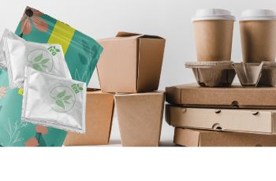
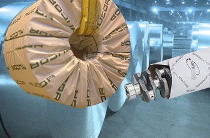
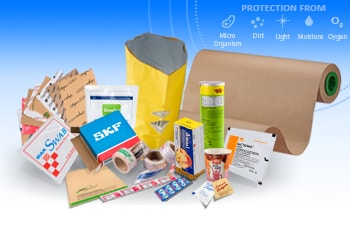

Sustainable, high-performance protection engineered for circular global supply chains. Replace conventional PE & petroleum plastic coatings with natural plant-derived biopolymers and certified Green VCI chemistry.

Estimate the quantified environmental benefits and corporate ESG score improvements when switching from single-use plastics to Safepack Bio-Safe solutions.
Safepack’s proprietary Bio-Safe extrusion process uses certified renewable crop feedstocks to deliver non-toxic, moisture-resistant barrier layers that leave zero permanent polymers behind.
Derived from non-GMO plant starches, sugarcane, and corn feedstocks, polymerized into high-purity PLA and biopolymer extrusion resins.
Thermally bonded directly onto FSC-certified neutral-pH virgin kraft paper up to 4000mm in width without toxic adhesive solvents.
Safeguards metal components, automotive parts, pharmaceuticals, and consumer goods across months of marine export transit.
Breaks down completely into organic water, CO₂, and nutrient-rich biomass within 90-180 days in municipal or home compost.
Explore our industrial range of compostable wrappers, barrier sheets, and sustainable anti-corrosion papers.
High-barrier kraft paper extrusion-coated with biopolymer resin. Replaces standard PE poly-coated paper with zero moisture barrier loss.

Green Rust PreventionPioneering multi-metal corrosion inhibiting paper synthesized with non-toxic, nitrite-free Green VCI chemistry on compostable substrate.

Food & Pharma SafeFluorochemical-free (PFAS-Free) barrier paper engineered for high oil, grease, and moisture resistance across food and medical packaging.
Direct technical and environmental comparison between conventional PE plastic wrappers and Safepack’s compostable formulations.
| Performance Feature | Safepack Bio-Safe Packaging | Traditional PE Poly-Coated Paper | Conventional Plastic Stretch Wrap |
|---|---|---|---|
| Primary Raw Material | FSC Virgin Kraft + Plant Biopolymer | Wood Pulp + Petroleum PE Resin | 100% Fossil Crude Low-Density PE |
| Degradation Timeline | 90 - 180 Days (Soil / Compost) | 100 - 400 Years in Landfills | 500+ Years (Persistent Microplastics) |
| Moisture Barrier (WVTR) | < 2.5 g/m²/24h (High Barrier) | ~ 2.0 g/m²/24h | ~ 1.5 g/m²/24h |
| Toxic Chemicals (PFAS / Nitrites) | 100% Free of Nitrites, Heavy Metals & PFAS | May contain microplastic binders | Plasticizers & synthetic additives |
| Corporate ESG Scope 3 Impact | -68% Carbon Footprint Reduction | High Scope 3 Footprint | High Scope 3 & Extended Producer Tax |
Safepack’s compostable materials and non-toxic Green VCI chemistry are validated by world-leading testing laboratories according to stringent international packaging standards.
Every roll of Safepack Bio-Safe paper comes with comprehensive NABL lab test reports, material safety data sheets (MSDS), and compostability batch certificates.
Download Compliance DossierRequest our comprehensive 2026 Industrial Sustainable Packaging Playbook and receive a complimentary testing sample roll kit shipped directly to your manufacturing plant.